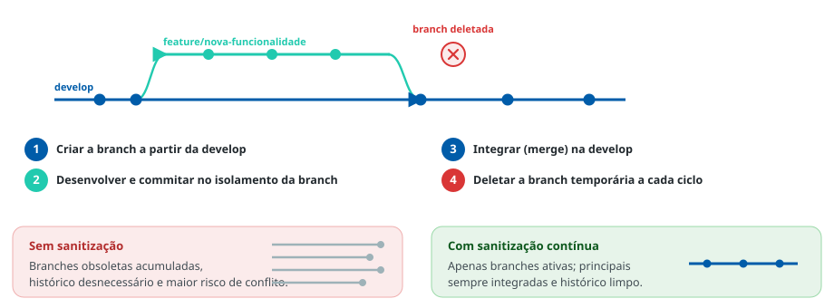

A integração do código deve ser contínua para garantir organização e sanitização dos repositórios
Todos os commits de versões candidatas e/ou finais devem ser incorporados
às branches principais (develop ou main). As branches temporárias
devem ser deletadas a cada novo ciclo, promovendo a sanitização contínua
dos repositórios — sem acúmulo de branches obsoletas e histórico desnecessário.
O que a diretriz exige
- Commits de versões candidatas e finais devem ser incorporados às branches principais (
developoumain). - As branches temporárias devem ser deletadas ao término de cada ciclo.
- O repositório não deve acumular branches obsoletas nem histórico desnecessário.
- A integração deve ser contínua, mantendo a organização e a rastreabilidade do repositório.
Ciclo de vida de uma branch temporária
Toda branch temporária tem vida curta: é criada a partir da linha principal, recebe os commits do trabalho isolado, é integrada de volta e, então, é deletada.

Repositórios saneados, com apenas branches ativas, integração contínua nas linhas principais e histórico consistente — base obrigatória para os indicadores de divergência da Diretriz 4.
As referências metodológicas sobre este assunto devem ser incluídas aqui. (espaço reservado para os links institucionais.)